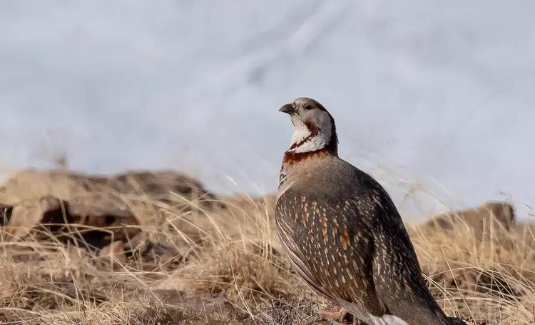
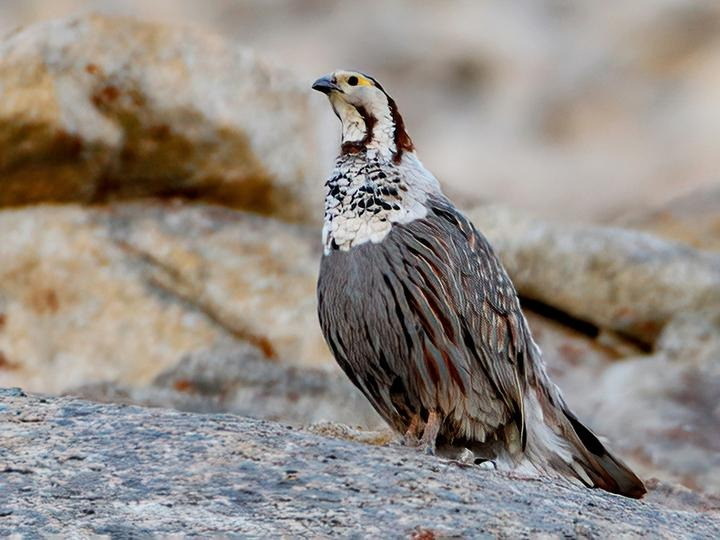
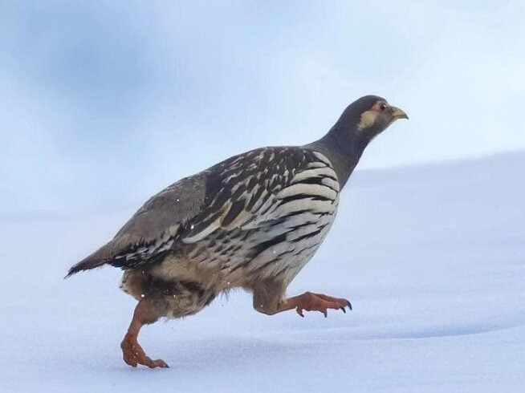
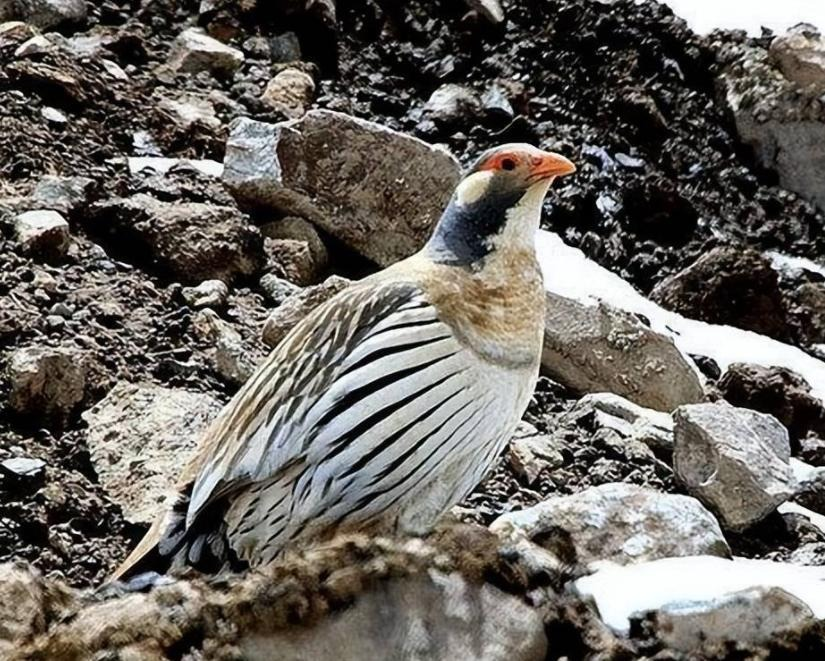
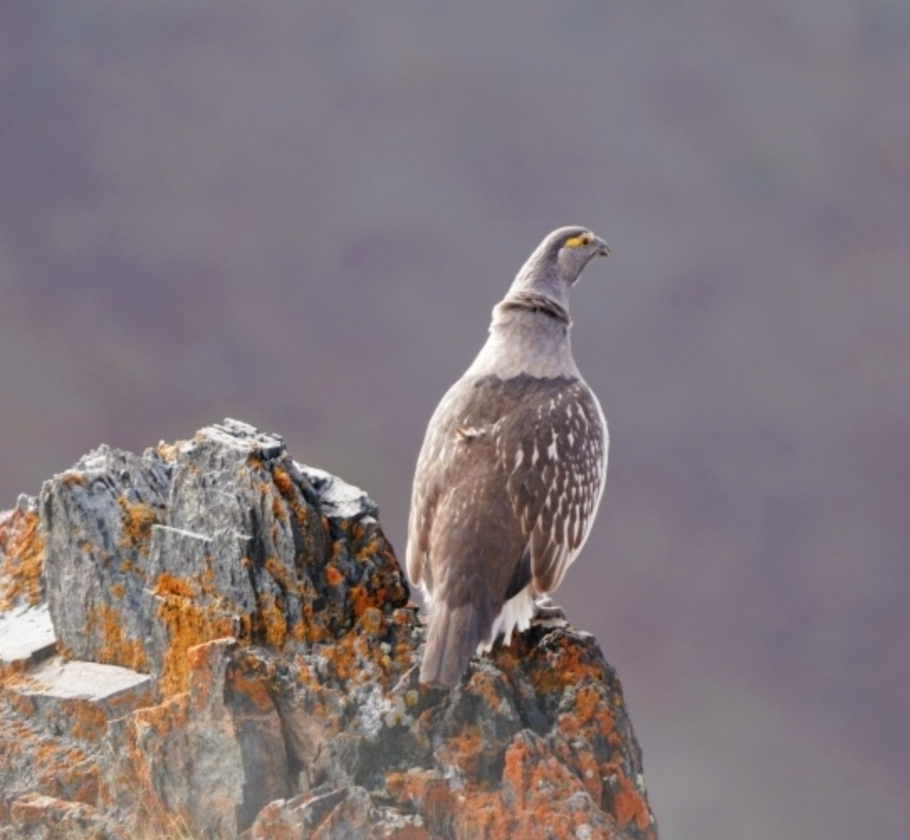

羽翼守望者


雪鸡属（Tetraogallus）隶属于雉科，全球约5种，主要分布于中亚高山地带，中国有3种。体型较大，约50-70cm，羽毛以灰色、褐色为主，具白色翼斑和尾羽尖端，与裸岩环境融为一体。它们适应高寒缺氧环境，善于奔走，飞行能力较弱，常在海拔3000-5500m的草甸、流石滩活动。
以植物根茎、种子、苔藓为食，也捕食昆虫。繁殖期营巢于地面岩石缝中，每窝产6-10枚卵。由于放牧和栖息地退化，部分种群数量下降，被列为近危物种。
📖 参考：点此处 查看国际鸟盟资料。

喜马拉雅雪鸡体长约50-60cm，上体灰褐色，具白色翼斑，喉部白色，尾羽尖端白色。分布于喜马拉雅山脉及我国青藏高原南缘。
栖息于高山草甸和裸岩，以草籽、浆果为食，冬季下迁至较低海拔。繁殖期5-7月，筑巢于岩缝中，每窝产6-8枚卵。因其分布区偏远，种群相对稳定。

藏雪鸡体长约55-65cm，全身灰褐色，具白色翼斑，尾羽黑色尖端白色，喉部白色。分布于青藏高原及帕米尔高原，为中国特有种。
适应高寒荒漠，常集群活动，以植物根、种子为食。繁殖期6-8月，筑巢于地面。因高原开垦和过度放牧，局部地区减少。

阿尔泰雪鸡体长约50-55cm，上体灰色带细纹，翼斑白色，喉部淡黄色。分布于阿尔泰山脉及蒙古西部，中国仅见于新疆北部。
栖于高山草甸，以植物嫩芽和昆虫为食。繁殖期5-6月，每窝产8-10枚卵。因栖息地偏远，威胁较小，但全球种群有限。
📖 参考：点此处 查看 IUCN 评估。

雪鸡属是高山生态系统的重要成员，保护高寒草甸和减少过度放牧是保护关键。公众可通过支持高原生态保护项目、参与自然观察记录来帮助它们。
📖 了解更多：点此处 查看中国林草局。